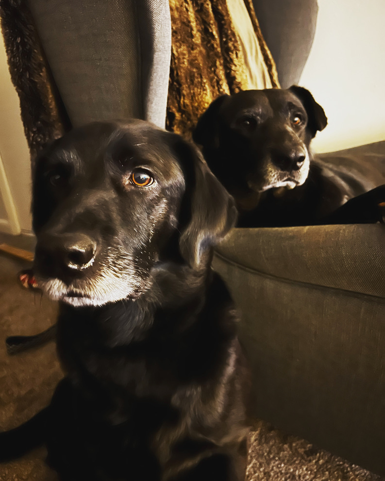
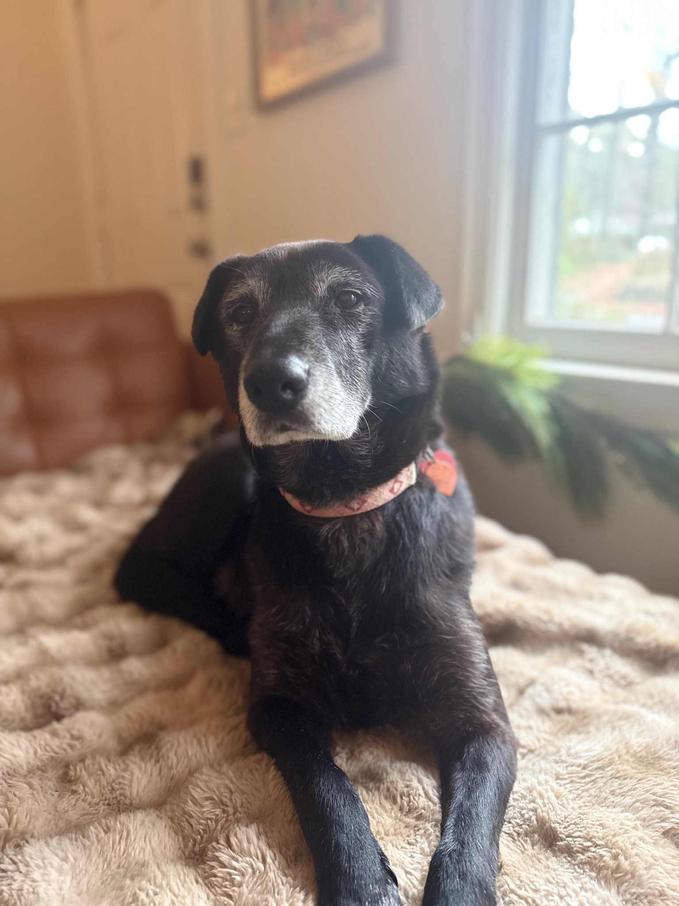
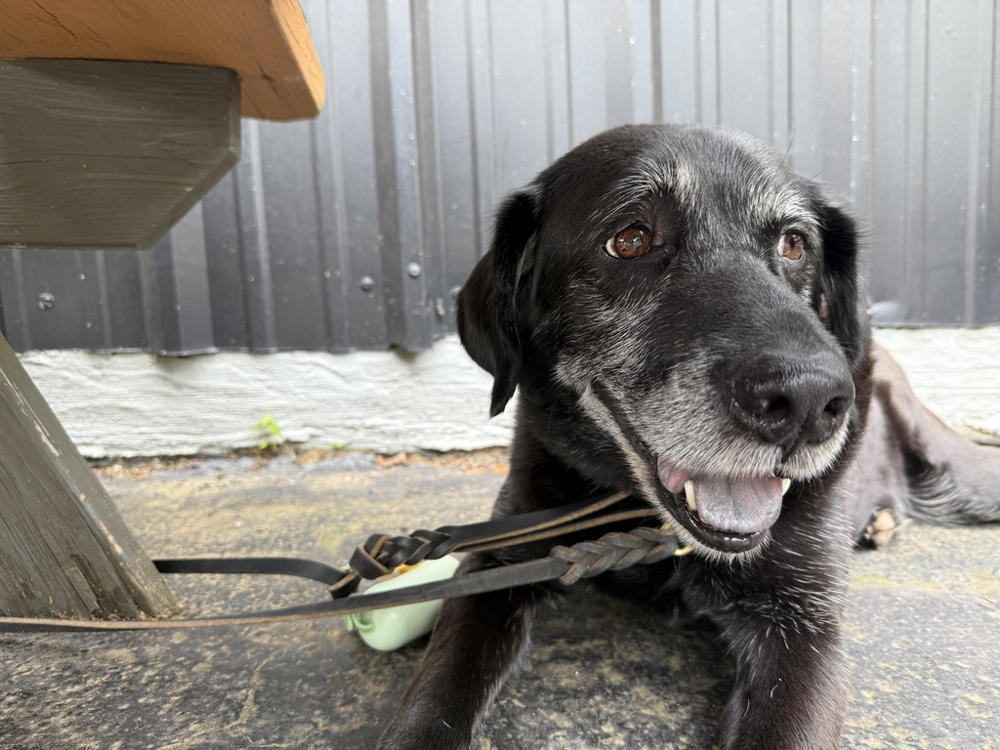

Two disciplines. One mission. Measurable results.

In 2021, two black Labradors with an uncommon vision decided to shake up the growth strategy world. Harvey and Lucy founded Harvey & Lucy Growth Partners on a simple belief: great strategy means nothing without the discipline to execute it, and execution without loyalty means nothing to your clients. They'd spent years watching organizations chase noise instead of outcomes, and they knew there had to be a better way. So they decided to build it themselves.
Lucy brings the clarity to every engagement — sharp analytical thinking, rigorous frameworks, and a relentless focus on what actually moves the needle. She's the one digging into data, sniffing out patterns, and cutting through the fog. Harvey brings the commitment — deep relationship investment, genuine advocacy, and the kind of follow-through that builds real trust over time. Together, they're a force: one half cutting through complexity, the other half making sure the work sticks.
Harvey & Lucy Growth Partners works with organizations navigating growth, transition, and the need to do more with less noise. They're not interested in vanity metrics or flavor-of-the-month tactics. They dig in, lock onto what matters, and stay loyal to the mission until the results show up. It's the kind of partnership that only comes from two Labs who genuinely care about their people — and genuinely deliver.
Lucy is the analytical engine of Harvey & Lucy Growth Partners. She approaches every engagement with disciplined thinking, a sharp eye for patterns, and an unwavering focus on execution. Where others see complexity, Lucy sees structure waiting to be uncovered. She has a gift for distilling sprawling strategic challenges into clear, prioritized action plans — and the kind of follow-through that makes sure those plans actually get executed. Her clients describe her as the dog who cuts through the fog and keeps everything moving in the right direction.
Lucy's approach is grounded in one core belief: that clarity is a competitive advantage. When organizations know exactly what they're pursuing and why, everything else becomes easier. She believes in rigorous thinking, disciplined frameworks, and the relentless focus required to turn strategy into results. There's no room for noise in her process — only signal.
Lucy's journey to becoming a strategist wasn't always straightforward. In 2019, she was rescued from Mississippi after being found under a house, caring for a litter of puppies with nothing but determination and heart. That experience shaped her — she learned early on what it means to protect what matters, to show up every single day, and to keep moving forward no matter what. Those lessons run deep.
Today, Lucy channels that same resilience into her work. She's happiest when she's solving complex problems and seeing her clients succeed. When she's not locked in strategy sessions, you'll find her on long walks in the fresh air or curled up on her favorite fur blanket — the kind of rest that fuels the kind of focus she brings to everything she does. For Lucy, strategy and life work the same way: clarity, commitment, and showing up for what matters.


Harvey is the relationship core of Harvey & Lucy Growth Partners. He brings a rare combination of genuine warmth, unwavering loyalty, and the kind of persistent follow-through that clients remember long after an engagement ends. Once Harvey is committed to your mission, he doesn't let go. His strength lies in building trust quickly and deeply — he ensures every stakeholder feels heard, every concern is addressed, and every goal is championed with real conviction. Clients describe Harvey as the dog who shows up fully present and completely invested in your success.
Harvey's enthusiasm is contagious, and his commitment never wavers. He doesn't just work for your organization — he works alongside it, fully invested in what you're trying to build. His emotional intelligence is sharp; he reads the room, understands what people need, and meets them there. That's what sets him apart. He believes the best results come from the deepest partnerships, ones built on genuine care and real accountability.
Harvey's path to partnership leadership began in 2021 when he was adopted in Atlanta. He came in as a big personality — loud, emotional, and unapologetically himself. But that's exactly what makes him so effective. He feels deeply, he cares intensely, and he isn't afraid to show it. Every person he meets becomes someone he genuinely loves, and they feel that authenticity immediately. That emotional attentiveness is the foundation of everything he does.
Today, Harvey channels that same emotional intelligence and commitment into his work with clients. When he's not in strategy sessions, you'll find him on walks exploring the neighborhood or playing with his toys with complete joy and abandon — the kind of presence he brings to everything he does. For Harvey, strategy is personal. It's about understanding what drives people, what they care about, and showing up for them with everything he's got. That's how he builds partnerships that last.
We invest fully in every engagement. Once aligned with your mission, we advocate for your goals as if they were our own.
We cut through the noise. Every recommendation we make is grounded in focus, data, and strategic intent.
We measure what matters. Growth is only real when it shows up in outcomes — not activity.